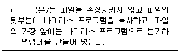
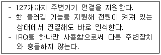

PC정비사-2급 (2016-04-24 기출문제)
1과목: PC유지보수
1. Windows 7 Professional 에서 '실행' 명령창을 통해 사용할 수 있는 명령에 대한 설명으로 잘못된 것은?
- dfrgui - 디스크 조각 모음을 실행 시킨다.
- Msconfig - 시스템 구성 유틸리티를 실행 시킨다.
- Mssystem - 시스템 등록 정보를 확인 할 수 있다.
- NetProj - 네트워크 프로젝터에 연결한다.
(정답률: 81%)

2. 부팅시 CD-ROM 드라이브를 액세스 하기 위해 필요한 파일은?
- SMARDRV.EXE
- SHARE.EXE
- RAMDRIVE.EXE
- MSCDEX.EXE
(정답률: 74%)
3. Windows 7 Professional 의 제어판 속에 있는 디스플레이 기능에 대한 설명 중 잘못된 것은?
- 화면에 표시되는 텍스트 크기를 75%, 100%, 125% 로 조정할 수 있다.
- 다중 디스플레이의 설정을 변경할 수 있다.
- 색이 정확하게 표현되게 하는 색 보정 기능을 지원한다.
- Windows XP 스타일의 DPI 배율을 사용하는것도 가능하다.
(정답률: 77%)
4. Windows 7 Professional 의 시스템 복구 옵션에서 제공되는 옵션이 아닌 것은?
- 디스크 오류 복원
- 자동 복구
- Windows 메모리 진단
- 시스템 이미지 복구
(정답률: 54%)
5. 시스템복원 기능은 소프트웨어적 문제를 해결할 수 있다. 다음 항목 중 시스템 복원 기능을 이용하여 복원할 수 없는 것은?
- 사용자용 문서 파일
- Windows용 시스템 파일
- Windows 응용 파일
- 레지스트리
(정답률: 78%)
6. Windows 7 은 Windows XP 에 비해 많은 변화가 있다. 다음 중 Windows 7 에 새로 포함된 기능으로 올바른 것은?
- 파일 단위 보안
- NT 커널의 이용
- 사용자 전환
- VHD 부팅
(정답률: 70%)
7. Windows 7 Professional 의 안전모드 옵션으로 잘못된 것은?
- 컴퓨터 복구
- 저해상도 비디오 사용(640x480)
- 시스템 오류 시 자동 다시 시작 사용 안 함
- XVGA 모드 사용
(정답률: 81%)
8. Windows 7 Professional 에서 복사하거나 잘라내기 한 내용이 임시 저장되는 영역으로 올바른 것은?
- 워드패드
- 클립보드
- 메모장
- 그림판
(정답률: 94%)
9. 다음 ( )에 올바른 것은?

- 겹쳐쓰기형 바이러스
- 부트 바이러스
- 매크로 바이러스
- 덧붙이기형 바이러스
(정답률: 86%)
10. Windows 7 Professional 내에서 파일 관리 작업과 응용 프로그램에서 공통적으로 사용하는 단축키와 그 기능을 설명한 것 중 잘못된 것은?
- Ctrl + Z : 이전실행, 작업취소
- Alt + F4 : 창 닫기, 실행종료
- Ctrl + A : 선택된 부분을 클립보드로 복사
- Ctrl + V : 클립보드의 내용을 탐색기, 문서 등에 붙여넣기
(정답률: 92%)
11. 운영체제 처리 방식 중 데이터가 발생하는 즉시 컴퓨터에서 처리가 이루어지는 시스템으로 은행의 온라인, 기차좌석 예약 등에 대표적으로 사용되는 방식은?
- 일괄처리 방식
- 다중 프로그래밍 방식
- 실시간 방식
- 시분할 방식
(정답률: 91%)
12. 일반 사용자 그룹으로 로그온한 후 명령 프롬프트에서 시스템 관리자로 프로그램을 실행하기 위해 필요한 명령어는?
- defrag
- runas
- guest
- administrator
(정답률: 76%)
13. 에러를 자신이 찾아 수정할 수 있는 코드는?
- 패리티 코드(Parity Code)
- 해밍 코드(Hamming Code)
- 그레이 코드(Gray Code)
- BCD코드(Binary Coded Decimal)
(정답률: 89%)
14. Windows 7 을 설치하기 전에 알아 두어야 할 사항으로 잘못된 것은?
- NTFS 파티션에 설치하는것을 권장한다.
- 설치하면서 하드디스크의 파티션과 분할과 format 작업을 할 수 있다.
- Windows 7 에는 사용환경, 포함된 작업도구에 따라 다양한 버전이 있으므로 사용 용도에 맞게 버전을 선택한다.
- Windows Vista Home Basic 에서는 Windows 7 Professional 버전으로 업그레이드 지원이 안 된다.
(정답률: 77%)
15. 운영체제의 발전 과정을 나열한 것이다. 이 중 시기적으로 가장 최근에 적용된 기법은?
- 분산 처리(Distributed Processing) 시스템
- 다중 프로그래밍(Multi Programming) 및 시분할(Time Sharing) 시스템
- 다중 모드(Multi Mode) 시스템
- 일괄 처리(Batch Processing) 시스템
(정답률: 74%)
2과목: PC운영체제
16. 현재 KS X 5002 규정에 국가 표준으로 공인되어 있는 한글 자판은?
- 2벌식 자판
- 3벌식 자판
- 3벌식 최종자판
- 3벌식 390 자판
(정답률: 83%)
17. 키보드의 인터페이스로 잘못된 것은?
- PS/2
- Parallel
- USB
- AT
(정답률: 80%)
18. 다음에서 설명하는 메인보드의 인터페이스는?

- USB 포트
- 시리얼/패러럴 포트
- SCSI
- E-IDE
(정답률: 83%)
19. RAM의 속도에 근접한 성능을 보이면서 전원이 없어도데이터가 손실되지 않는 메모리는?
- Flash Memory
- DDR SDRAM
- Cache Memory
- DDR SGRAM
(정답률: 68%)
20. 다음 중 다른 세 가지와 달리 수치가 클수록 성능이 낮아지는 것은?
- CPU 성능(MHz)
- RAM의 Access 속도(ns)
- CD-ROM 성능(배속)
- LAN 연결속도(bps)
(정답률: 77%)
21. 사운드 카드 부품에 대한 설명 중 잘못된 것은?
- 라인 입력 단자는 외부의 아날로그 스테레오 신호를 받기 위해 사용된다.
- 외부 입력 단자는 TV 카드와 같은 컴퓨터 내부의 다른 음원과의 연결에 사용된다.
- ADC는 외부에서 사운드 카드로 입력된 아날로그 신호를 디지털 신호로 변환한다.
- 디지털 출력을 사용하면 음질 및 편의성이 떨어진다.
(정답률: 80%)
22. LCD 모니터의 제원에 대한 설명으로 잘못된 것은?
- 밝기는 클수록 좋다.
- 명암비는 높을수록 좋다.
- 응답 시간은 길수록 좋다.
- 시야각이 클수록 상하좌우 어느 위치에서건 화면을 뚜렷하게 볼 수 있다.
(정답률: 91%)
23. 사진이나 문서 등을 컴퓨터용 이미지로 변환해주는 장치는?
- 키보드
- 칼라프린터
- 스캐너
- 복사기
(정답률: 93%)
24. 일반적으로 CPU와 램이 데이터를 주고받는 버스의 속도를 가리키는 용어는?
- Front Side Bus
- Cache
- Ratio
- PCI
(정답률: 69%)
25. 입력장치 중에서 직접 입력방식이 아닌 것은?
- 키보드
- OMR
- 마우스
- 디지타이저
(정답률: 86%)
26. 비디오 어댑터에 대한 설명으로 잘못된 것은?
- 비디오 어댑터는 디스플레이 기능을 사용하기 위해 PC에 꽂는 확장 보드이다.
- 컴퓨터의 디스플레이 기능은 비디오 어댑터에 제공되는 논리 회로와 모니터에 의해 결정되고, 각 어댑터마다 서로 다른 여러 비디오 모드를 제공한다.
- 메인보드와 통합되어 출시되는 제품의 경우 자체 RAM이 없이 주기억장치의 메모리를 공유하여 사용하기도 한다.
- 고해상도에서 더 많은 색을 표시할 수 있다.
(정답률: 64%)
27. PC 주변 장치의 인터페이스 방식으로 잘못된 것은?
- IDE
- SCSI
- USB
- BNC
(정답률: 69%)
28. 다음 인터페이스 중 데이터 전송속도가 가장 빠른 것은?
- PCI
- AGP 8X
- PCI Express 16X
- PCI Express 1X
(정답률: 87%)
29. 마우스의 1인치당 포인트 이동 픽셀 단위는?
- DPI
- ppm
- mm
- inch
(정답률: 84%)
30. 그래픽 카드 성능에 가장 큰 영향을 미치는 것은?
- 픽셀 파이프 라인
- GPU 코어와 클럭
- GPU 메모리 버스
- GPU 메모리 용량
(정답률: 89%)
3과목: PC주변기기
31. PC가 부팅할 때, 키보드의 Num Lock, Caps Lock, Scroll Lock의 LED가 한번 깜박거리는 것이 의미하는 것은?
- 키보드에 전원이 공급되었음을 의미한다.
- 키보드 제어기와 CPU와 정보를 교환하며 자체 검사하는 과정을 의미한다.
- 키보드가 부팅과정에서 오류가 발생되었다는 것을 의미한다.
- 키보드 드라이버를 설치하여야 한다.
(정답률: 78%)
32. PC의 부팅 시간, Windows의 체감 속도, 프로그램의 실행 속도 등 전체적으로 속도가 저하된 경우 그 원인으로 볼 수 없는 것은?
- Windows의 레지스트리 정보가 많아졌기 때문이다.
- 특정 프로그램의 실행 속도나 Windows의 부팅 속도는 하드디스크의 단편화가 그 원인이 된다.
- Windows를 오래 사용하다 보면 각종 DRV, INI 파일 등이 Windows 폴더에 쌓이게 되며, 이러한 정보로 인하여 Windows 속도가 느려지는 원인이 된다.
- DNS 서버의 지정이 잘못되거나 서버에 오류가 발생한 경우 Windows의 프로그램 실행 속도가 느려지는 원인이 된다.
(정답률: 61%)
33. 최근에 출시되고 있는 많은 메인보드들은 시스템 클럭을 점퍼 설정이 아닌 BIOS에서 소프트웨어적으로 처리하고 있다. 시스템 클럭의 과도한 오버클러킹으로 인해 화면이 뜨지 않았을 때의 대처 방법으로 잘못된 것은?
- CMOS 설정 값을 메인보드의 점퍼를 이용하여 초기화한다.
- 메인보드 배터리를 제거 후 다시 장착한다.
- 새로운 ROM BIOS를 장착한다.
- 램 슬롯을 깨끗이 청소한다.
(정답률: 65%)
34. Windows 7 에서 설치된 하드디스크에 필요 없는 파일을 삭제하여 Windows 용량을 줄이려고 한다. 삭제하면 안되는 확장자는?
- cpl
- bak
- tmp
- old
(정답률: 72%)
35. 프린터가 동작하지 않은 원인으로 잘못된 것은?
- 프린터 드라이버가 정상적으로 설치되지 않았다.
- 프린터 케이블에 문제가 발생하였다.
- 프린터 포트가 잘못 설정되어 있다.
- COM 포트를 설정하지 않았다.
(정답률: 88%)
36. 바이오스(BIOS)를 업그레이드 했을 때 얻을 수 있는 장점이 아닌 것은?
- 큰 용량의 하드디스크를 지원할 수 있다.
- 좀 더 높은 사양의 CPU를 사용할 수 있다.
- 모든 종류의 램을 사용할 수 있다.
- 기존의 문제를 해결하여 안정적인 환경을 만들 수 있다.
(정답률: 81%)
37. BIOS Setup 에서 할 수 없는 작업은?
- 웹 서비스 설정
- 부팅 드라이브 순서 설정
- 시스템 날짜 및 시간 설정
- 하드디스크 타입 설정
(정답률: 65%)
38. 플러그 앤 플레이(Plug & Play)기능이 제대로 인식되기 위한 조건으로 올바른 것은?
- 롬 바이오스와 운영체제에서만 지원 가능하면 된다.
- 롬 바이오스와 주변기기에서만 지원 가능하면 된다.
- 롬 바이오스와 운영체제, 주변기기만 지원 가능하면 된다.
- 롬 바이오스와 운영체제, 설치 슬롯만 지원 가능하면 된다.
(정답률: 75%)
39. BIOS 설정 내용 중에서 부트 섹터와 파티션 테이블에 기록이 되지 않도록 설정 할 때 사용되는 메뉴는?
- CPU Cache
- Anti Virus Protection
- ROM BIOS Shadow
- Power Management
(정답률: 72%)
40. Windows의 파티션 관리 프로그램인 FDISK로 할 수 없는 작업은?
- 분할 영역 생성 및 삭제
- 분할 영역에 관한 정보 열람
- 클러스터 크기 변경
- 분할 영역 활성화
(정답률: 74%)
41. 주변기기에서 메모리로 데이터를 직접 전송하는 방식은?
- DMA
- PCI
- PIO
- SMART
(정답률: 76%)
42. BIOS 프로그램의 역할이 아닌 것은?
- 시스템의 이상 여부 체크
- 하드웨어 장치의 초기화
- 하드웨어 드라이버 저장
- 부팅 순서 설정 변경
(정답률: 63%)
43. CD-ROM 드라이브로 오디오 CD를 재생시켰는데 CD-ROM 드라이브에 있는 헤드폰 단자에서는 정상적으로 소리가 나지만 사운드 카드에 연결된 스피커에서는 소리가 나지 않을때, 점검할 필요가 없는 부분은?
- 오디오 CD의 이상 유무
- 스피커의 고장 유무
- 오디오 케이블의 연결 상태 확인
- 사운드 카드의 이상 유무
(정답률: 73%)
44. PnP 장치가 관리하지 않는 것은?
- DMA 채널
- TCP 포트
- IRQ
- 입출력 Address
(정답률: 75%)
45. Windows에서 시스템에 설치된 하드웨어 구성과 소프트웨어 설정에 관한 각종 정보를 담고 있는 것은?
- Registry
- Driver
- Notepad
- Access
(정답률: 79%)
4과목: PC네트워크
46. 컴퓨터 통신에서 컴퓨터간의 정보 교환을 가능하게 하기 위하여 규정된 통신규약은?
- 인터페이스
- 프로토콜
- 터미널
- 샘플링
(정답률: 86%)
47. 네트워크 케이블의 길이가 길어지는 경우 중간에서 발생하는 손실과 신호의 약화를 방지하기 위하여 설치하는 신호 증폭 장치는?
- 라우터
- 허브
- 브릿지
- 리피터
(정답률: 69%)
48. 라우터의 장점으로 잘못된 것은?
- 알고리즘에 따라 자동으로 경로가 결정되므로 유지 보수가 용이하다.
- 특정 프로토콜이나 하위 프로토콜 지원이 가능하고 복잡하므로 가격이 싸다.
- 환경설정이 가능하여 관리 방침에 따라 라우팅 방식이 결정되고 전체 네트워크의 성능이 개선된다.
- 네트워크 형상에 구애받지 않으므로 대규모 네트워크 구성이 용이하다.
(정답률: 79%)
49. 다음 중 무선 랜의 기본 전송 기술 중 DSSS(Direct Sequence Spread Spectrum) 방식에 대한 설명으로 잘못된 것은?
- 넓은 대역으로 데이터를 확산하여 전송한다.
- 보안성이 우수하다.
- 강한 잡음에도 전송 품질을 매우 잘 유지한다.
- 2.4GHz~2.5GHz 대역의 주파수를 사용한다.
(정답률: 67%)
50. 응용 계층에서 성격이 서로 다른 네트워크를 상호 변환하여 정보를 주고받기 위해 사용되는 장치는?
- Repeater
- Bridge
- Gateway
- Hub
(정답률: 72%)
Windows 7 Professional에서 '실행' 명령창을 통해 사용할 수 있는 명령에 대한 설명은 다음과 같다.
- dfrgui: 디스크 조각 모음을 실행 시킨다.
- Msconfig: 시스템 구성 유틸리티를 실행 시킨다.
- Mssystem: 시스템 등록 정보를 확인 할 수 있다.
- NetProj: 네트워크 프로젝터에 연결한다.
위의 설명 중에서 잘못된 것은 없다.